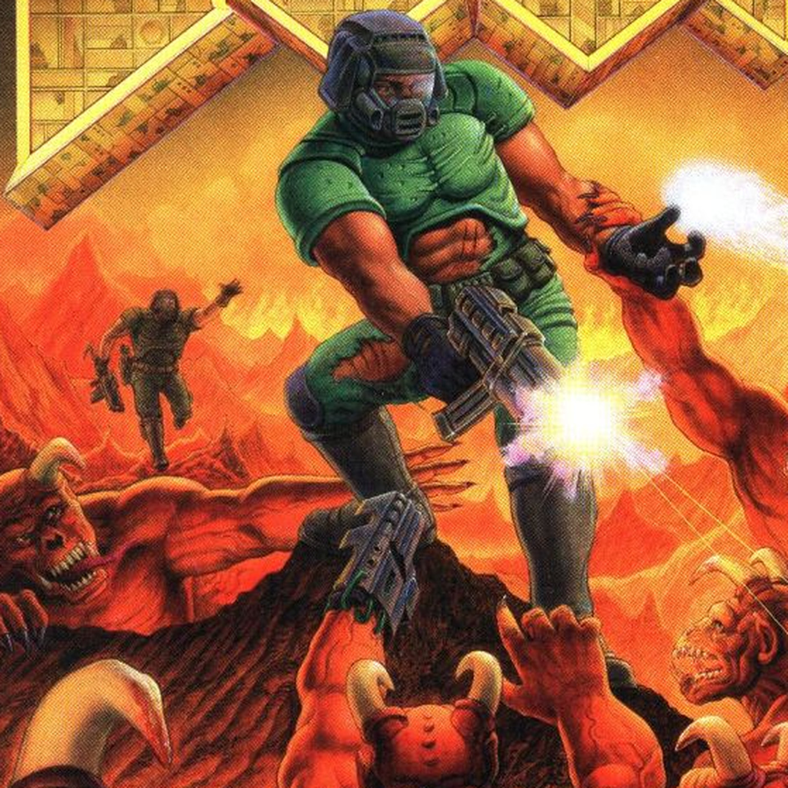

Cuando un experimento de teletransportación sale terriblemente mal, las instalaciones de la UAC en las lunas de Marte son invadidas por fuerzas demoníacas procedentes del Infierno. Como uno de los pocos supervivientes, un marine espacial deberá abrirse paso entre monstruos y pesadillas para detener la invasión y enfrentarse a la oscuridad que amenaza a la humanidad.